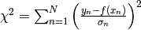
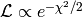
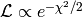
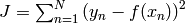

Least-squares fitting in Python¶
Many fitting problems (by far not all) can be expressed as least-squares problems.
What is least squares?¶
- Minimise 
- If and only if the data’s noise is Gaussian, minimising
 is identical to maximising the likelihood .
is identical to maximising the likelihood . - If data’s noise model is unknown, then minimise 
- For non-Gaussian data noise, least squares is just a recipe (usually) without any probabilistic interpretation (no uncertainty estimates).
Least squares in Scipy I: scipy.optimize.leastsq¶
Scipy provides a method called leastsq as part of its optimize package. However, there are tow problems:
- This method is not well documented (no easy examples).
- The way the function for minimisation is provided seems to allow only for linear models.
- Error/covariance estimates on fit parameters not straight-forward to obtain.
Internally, leastsq uses Levenburg-Marquardt to minimise the score function.
First step is to declare the function that should be minimised:
import numpy
# The function whose square is to be minimised.
# params ... list of parameters tuned to minimise function.
# Further arguments:
# xdata ... design matrix for a linear model.
# ydata ... observed data.
def func(params, xdata, ydata):
return (ydata - numpy.dot(xdata, params))
# Generate artificial data = straight line with a=0 and b=1 plus some noise.
xdata = numpy.transpose(numpy.array([[1.0,1.0,1.0,1.0,1.0,1.0],[0.0,1.0,2.0,3.0,4.0,5.0]]))
ydata = numpy.array([0.1,0.9,2.2,2.8,3.9,5.1])
# Initial guess.
x0 = numpy.array([0.0, 0.0])
Now, we can use the least-squares method:
import scipy.optimize as optimization
print optimization.leastsq(func, x0, args=(xdata, ydata), maxfev=1000)
Note the args argument, which is necessary in order to pass the data to the function.
This only provides the parameter estimates (a=0.02857143, b=0.98857143).
Least squares in Scipy II: scipy.optimize.curve_fit¶
curve_fit is also part of scipy.optimize and a wrapper for scipy.optimize.leastsq that overcomes its poor usability.
For instance, the objective function is much more easily defined as the model:
def func(x, a, b, c):
return a + b*x + c*x*x
Furthermore, the input data does not need to be a design matrix anymore:
xdata = numpy.array([0.0,1.0,2.0,3.0,4.0,5.0])
# Initial guess.
x0 = numpy.array([0.0, 0.0, 0.0])
Data errors can also easily be provided:
sigma = numpy.array([1.0,1.0,1.0,1.0,1.0,1.0])
Usage is very simple:
print optimization.curve_fit(func, xdata, ydata, x0, sigma)
This outputs the actual parameter estimate (a=0.1, b=0.88142857, c=0.02142857) and the 3x3 covariance matrix.
Lack of robustness¶
Gradient methods such as Levenburg-Marquardt used by leastsq/curve_fit simply run into the nearest local minimum.
Here is a demonstration:
import numpy,math
import scipy.optimize as optimization
import matplotlib.pyplot as plt
# Chose a model that will create bimodality.
def func(x, a, b):
return a + b*b*x
# Create toy data.
xdata = numpy.array([0.0,1.0,2.0,3.0,4.0,5.0])
ydata = numpy.array([0.1,0.9,2.2,2.8,3.9,5.1])
sigma = numpy.array([1.0,1.0,1.0,1.0,1.0,1.0])
# Compute chi-square manifold.
Steps = 101
Chi2Manifold = numpy.zeros([Steps,Steps])
amin = -7.0
amax = +5.0
bmin = -4.0
bmax = +4.0
for s1 in range(Steps):
for s2 in range(Steps):
a = amin + (amax - amin)*float(s1)/(Steps-1)
b = bmin + (bmax - bmin)*float(s2)/(Steps-1)
chi2 = 0.0
for n in range(len(xdata)):
residual = (ydata[n] - func(xdata[n], a, b))/sigma[n]
chi2 = chi2 + residual*residual
Chi2Manifold[Steps-1-s2,s1] = chi2
plt.figure(1, figsize=(8,4.5))
plt.subplots_adjust(left=0.09, bottom=0.09, top=0.97, right=0.99)
# Plot chi-square manifold.
image = plt.imshow(Chi2Manifold, vmax=50.0, extent=[amin, amax, bmin, bmax])
# Plot where curve-fit is going to for a couple of initial guesses.
for a_initial in -6.0, -4.0, -2.0, 0.0, 2.0, 4.0:
# Initial guess.
x0 = numpy.array([a_initial, -3.5])
xFit = optimization.curve_fit(func, xdata, ydata, x0, sigma)[0]
plt.plot([x0[0], xFit[0]], [x0[1], xFit[1]], 'o-', ms=4, markeredgewidth=0, lw=2, color='orange')
plt.colorbar(image) # make colorbar
plt.xlim(amin, amax)
plt.ylim(bmin, bmax)
plt.xlabel(r'$a$', fontsize=24)
plt.ylabel(r'$b$', fontsize=24)
plt.savefig('demo-robustness-curve-fit.png')
plt.show()